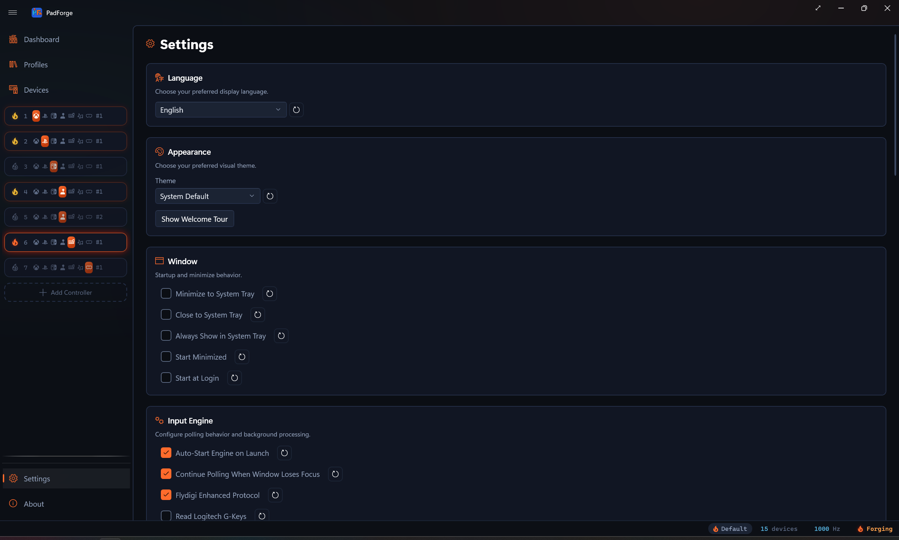

Troubleshooting¶
Common problems and how to fix them. If your issue is not on this page, check GitHub Issues.

Related pages: Installation, Settings, Driver Management, Devices.
No Devices Detected¶
The Devices page is empty or the Dashboard shows "0 / 0 devices online."
- Try a different USB port. Use one directly on the computer, not a hub.
- Try a different cable. Some cables are charge-only.
- Restart PadForge. Some devices need a fresh launch.
- Check Windows Device Manager. If the device does not appear under "Human Interface Devices" or "Sound, video and game controllers," the issue is the device or its driver.
- For Bluetooth controllers, pair and connect in Windows Bluetooth settings before starting PadForge.
- If HidHide is installed, another tool may have cloaked the device. PadForge adds itself to the HidHide whitelist automatically while "Hide devices from games" is on in Settings. With that toggle off, decloak the device in the HidHide Configuration Client, or turn the toggle on and let PadForge manage hiding.
- Close other controller tools (DS4Windows, BetterJoy, reWASD, x360ce). They may intercept access.
- A DualShock 3 pairs through PadForge itself, with no separate driver tool to install. Connect it by USB, click Pair on the Devices page, and follow the dialog. When it finishes, unplug the pad and press the PS button to connect over Bluetooth. It then streams with rumble and the player-number LED.
Controller Detected but Not Mapping¶
The controller appears on Devices but produces no output or wrong output on the virtual controller.
- Unknown or unusual controllers may need manual mapping.
- Assign the device to a slot. Select at least one numbered toggle on the Devices page.
- Map inputs manually via Record on the Mappings tab for each button and axis.
- Enable "Force raw joystick mode (bypass gamepad remapping)" on the Devices page if SDL3's remapping produces wrong outputs. Re-record all mappings afterward.
- Check live input on the Devices page. If axes and buttons do not respond there, the issue is at the driver or HID level.
- Check the source dropdown on each mapping row. Confirm it points to the correct input device.
Virtual Controller Not Appearing in Games¶
A slot is created and a device assigned, but games do not detect the virtual controller.
- Install HIDMaestro from Settings for Xbox, PlayStation, Nintendo, or Extended output.
- Install Windows MIDI Services from Settings for MIDI output.
- Confirm the slot is enabled. The power icon on the Dashboard card should be green.
- Confirm the engine is running. The Dashboard should show "Running" with a green icon.
- Restart the game. Some games only scan for controllers at startup.
- Check the game's input settings. Some games require manual controller selection.
- For Extended controllers, verify in
joy.cpl(Win+R >joy.cpl). If controllers are not listed, see "Extended Controllers Not Working" below.
Nintendo Slot Not Seen by a Game¶
A Nintendo virtual controller is active but the game does not react to it.
- Install HIDMaestro from Settings. The Nintendo output rides the same driver as Xbox, PlayStation, and Extended.
- Games see the slot as a Nintendo Switch Pro Controller. XInput-only games never read a Pro Controller. Use an Xbox slot for those.
- Steam Input detects it as a Pro Controller with Nintendo glyphs. For games without native Switch Pro support, let Steam Input translate it, or switch the slot to Xbox output.
- Gyro and accelerometer pass through from the assigned pad, so emulators and Steam Input gyro read real motion.
- Face buttons follow Nintendo lettering, so A sits on the right and B on the bottom. Prompts that look swapped against an Xbox pad are the Switch layout working as intended.
- The Nintendo slot has no Customize surface. It always deploys the Switch Pro catalog profile as-is.
Double Input in Games¶
Every press registers twice, menus scroll too fast, or the game shows two controllers.
The game is reading both the physical controller and PadForge's virtual controller.
- Install HidHide from Settings.
- Enable "Hide devices from games" on the Settings page.
- On the Devices page, enable "Hide from games (HidHide)" per device.
- PadForge always whitelists itself, so it keeps seeing hidden devices. Add other apps (emulators, tools) that need a hidden device under Whitelisted Applications on Settings.
- Restart the game after changing HidHide settings.
- Check the game's controller settings. Disable the physical controller and keep the virtual one.
- If using Steam, disable Steam Input for the game or close Steam entirely.
- BLE controllers (e.g., Xbox via Bluetooth) are properly hidden by HidHide on current PadForge builds. If peek-through still happens, check that the per-device "Hide from games (HidHide)" toggle is on and that "Hide devices from games" is enabled in the HidHide section of Settings.
Rumble Not Working¶
No vibration from the physical controller when games send force feedback.
- Set Overall Gain above 0% on the Force Feedback tab.
- Set both left motor and right motor strength above 0%.
- Click Test Rumble to verify hardware support. No vibration means the device lacks rumble motors or driver support.
- Confirm a device is assigned to the slot and connected (green status dot).
- Check rumble support on the Devices page capabilities list. Devices without native rumble attempt haptic fallback, but results vary.
- Try a different game. Not all games use force feedback.
- Close other controller software (Steam Input, DS4Windows, reWASD) that may intercept rumble.
- A DualShock 3 rumbles once it is paired through PadForge's Pair flow on the Devices page. Rumble is native over that connection. A DS3 running through some other driver may not pass rumble.
- For Extended output, the game must send HID PID 1.0 force feedback. See "Force Feedback Not Working" below.
Audio Bass Rumble Not Working¶
Audio Bass Rumble is enabled but the controller does not vibrate, or the Level meter stays flat.
- Confirm audio plays through the system default render device. The Level meter should show activity.
- Level meter flat during playback? Toggle Audio Bass Rumble off and on to restart WASAPI capture.
- Set Overall Gain above 0%. It applies to audio rumble too.
- Increase sensitivity (default 4, try 8-12, range 1-20).
- Raise Bass Cutoff (Hz) (default 80, range 20-200) to capture more mid-bass.
- Set both motor scale sliders above 0%.
- Click Test Rumble. No vibration means the device lacks rumble motors.
- Some apps (DAWs, certain games) open audio in exclusive mode, blocking WASAPI loopback.
- At least one audio output device must be active in Windows Sound settings.
Bass Shakers Output Silent¶
"Route rumble to an audio output" is on but nothing plays on the shaker or subwoofer.
- Check the status line on the Bass Shakers tab. "Audio output is not running." means the routing is off or the engine is stopped. "The selected output device is unavailable. Audio stays off until it returns." means the chosen Output Device disappeared. Pick another or reconnect it.
- The feature works with Xbox, DualShock 4 / DualSense, and Nintendo Switch Pro virtual controllers, plus Extended virtual controllers with force feedback, such as racing wheels. Other slot types have no game feedback to route.
- Only game feedback plays through the audio output. Test Rumble on the Force Feedback tab and macro rumble stay on the controller by design. To test the audio path, use the per-voice Test buttons or Frequency Sweep on the Bass Shakers tab instead.
- Set Master Gain above zero and enable at least one voice with its own gain above zero.
- Run Frequency Sweep (20 to 120 Hz over eight seconds) and note where the shaker responds strongest, then set the voice frequencies there.
- Bluetooth audio devices add noticeable latency. Use a wired output if the thump lags the game.
Extended Controllers Not Working¶
Extended (HIDMaestro) controllers do not appear in games or joy.cpl.
- Accept the UAC prompt at PadForge startup. PadForge always runs as administrator. Cancelling the prompt blocks startup entirely, so the engine never initializes HIDMaestro.
- Verify the HIDMaestro driver shows "Installed" on the Settings page.
- Check
joy.cpl(Win+R >joy.cpl). If empty, create an Extended slot on the Dashboard first. - Restart PadForge after installing HIDMaestro.
- If a slot stays stuck on "Initializing," check the Inactivity timeout in Settings. After the timeout, a slot whose mapped devices stay offline has its live virtual controller torn down to free its kernel slot. The slot configuration (mappings, profile, position) is preserved. The virtual controller recreates automatically when the devices return online.
Force Feedback Not Working¶
Games send force feedback but the physical controller does not vibrate on an Extended slot.
- Confirm the game sends HID PID 1.0 force feedback. Most native DirectInput FFB games do. XInput-only games do not. Use Xbox or PlayStation output for XInput rumble.
- Set Overall Gain above 0% on the Force Feedback tab.
- Set motor strength sliders above 0%.
- Click Test Rumble to confirm the physical controller supports rumble.
- HIDMaestro Extended profiles publish constant, ramp, periodic (sine, square, triangle, sawtooth), and condition (spring, damper, inertia, friction) effects. Effect types outside that set may not produce rumble.
- Restart the game. Some games only initialize FFB at startup.
MIDI Not Available¶
The MIDI button does not appear in the "Add Controller" popup.
- Install Windows MIDI Services from Settings.
- Windows MIDI Services requires Windows 11 24H2 (build 26100) or later. Earlier Windows 11 builds and any Windows 10 build are unsupported by Microsoft's SDK.
- Restart PadForge after installing.
- Verify the "Windows MIDI Services" service is running (Win+R >
services.msc). - "Failed to create MIDI session" means the SDK initialized but cannot reach the service. Restart the service or reboot.
No MIDI Output¶
A MIDI slot is active but no messages reach the DAW or synthesizer.
- In the DAW, look for "PadForge MIDI N" in the MIDI input list.
- Set the receiving app to read from the PadForge MIDI endpoint.
- Confirm the engine is running and the slot is enabled (green power icon).
- Match the MIDI channel (1-16) between PadForge and the receiving app.
- Verify CC numbers (axes) and note numbers (buttons) match what the receiving app expects.
- Use a MIDI monitor (MIDI-OX or Windows MIDI Services console) to confirm PadForge is sending. If messages appear there but not in the DAW, the issue is DAW configuration.
My Macro Doesn't Fire¶
A macro trigger is configured but pressing the trigger does nothing.
- All trigger components must be active simultaneously. Partial presses do not fire.
- For axis triggers, the input must exceed the configured threshold percentage.
- Check the macro's Layer. "Any layer" fires regardless of the engaged layer. Base and named layers fire only while that layer is engaged, exactly like a mapping row. A macro scoped to a shift layer is inert the whole time that layer is off.
- Check the trigger mode. Several fire by design only on a specific press shape:
- On Long Press fires after the trigger is held for the Hold Time. A quick tap does nothing.
- On Short Press fires on release before the Hold Time elapses. Holding past it fires nothing.
- On Single Press, On Double Press, and On Triple Press wait out the Press Window and fire only on the matching press count.
- Turbo repeats only while the trigger is held.
- Confirm the macro's enable checkbox is checked.
- Confirm the engine is running and the slot is enabled.
- If the trigger source is "Input Device" but no device is assigned, there is nothing to read. Switch to "Output Controller" or assign a device.
- Check for conflicting macros with overlapping triggers on the same slot.
Mouse Actions from Macros Aren't Working¶
A macro with Mouse Move, Mouse Button, or Mouse Scroll produces no visible effect.
- Match the axis source. "Output Controller" reads mapped output, "Input Device" reads the physical device directly.
- Adjust the sensitivity slider if movement is too fast or too slow.
- Confirm the trigger is firing (see "My Macro Doesn't Fire" above).
- Anti-cheat software may block simulated mouse input.
Macro Won't Stop Running¶
A macro keeps firing after the trigger is released, or runs with no trigger at all.
- A macro set to Always fires every frame while the slot is active. No trigger required. That is its design.
- A macro set to Toggle latches: the first press turns the actions on, and holds and repeats stay active until the second press. Tap the trigger again to release it.
- Uncheck the macro's enable checkbox to stop it.
- Delete the macro if it is no longer needed.
- Disable the slot (power icon on the Dashboard card) to stop all its macros.
Keyboard+Mouse Not Working¶
A Keyboard+Mouse slot is active but key presses or mouse movement do not appear in games.
- Verify the slot type is Keyboard+Mouse on the Dashboard card.
- Assign physical inputs to keyboard keys or mouse buttons on the Mappings tab.
- Adjust mouse sensitivity on the Sticks tab or macro action settings.
- Anti-cheat software (EAC, BattlEye, Vanguard) may block simulated input.
- Confirm the engine is running and the slot is enabled.
Settings Not Saving¶
Changes revert after restart or the settings file does not update.
- Wait for autosave. PadForge saves after changes settle. Unexpected closes may lose recent edits.
- Click Save on the Settings page to force an immediate save.
- Confirm PadForge has write access to its folder.
PadForge.xmllives next to the executable. "Error saving settings" in the status bar indicates a permissions issue. - Click "Open Folder" on Settings and verify
PadForge.xmlexists and is not read-only. - Add a PadForge exception if antivirus software blocks file writes.
- If "Error loading settings" appears on startup, the XML is corrupted. Delete
PadForge.xmland restart. PadForge creates fresh defaults. Or click "Reset to Defaults." - If the folder is synced by OneDrive, Dropbox, or similar, concurrent access across machines can corrupt the file. Move PadForge to a non-synced folder.
App Won't Start or UAC Prompt Issues¶
PadForge does not start, closes immediately, or shows a UAC prompt every time.
- UAC is expected. PadForge always runs as administrator. HIDMaestro driver registration, HidHide whitelist edits, and the polling loop all run in that one elevated process.
- Clicking "No" on UAC blocks startup. Windows does not start an administrator-required app when the user declines the prompt. Run PadForge again and accept the prompt.
- PadForge allows only one instance. Check Task Manager for existing PadForge processes.
- Check for
crash.lognext toPadForge.exe. It appears only after a crash and records the error. Attach it to a bug report. - PadForge ships as a single self-contained
PadForge.exewith the .NET runtime and SDL3 embedded. Nothing needs installing separately. If startup still fails with nocrash.log, the download may be truncated or corrupt. Re-downloadPadForge.exefrom the release page.
High CPU Usage¶
PadForge uses significant CPU, causing fan noise or slowdowns.
- Increase the polling interval in Settings > Input Engine. Default is 1 ms (~1000 Hz). Try 4 ms (~250 Hz) or 8 ms (~125 Hz) for casual use.
- Disable "Continue polling when window loses focus" if PadForge is only needed during gameplay.
- Remove unused virtual controller slots.
- Disable Audio Bass Rumble on unused slots (runs WASAPI capture and real-time DSP).
DSU Motion Not Working in Emulator¶
The emulator does not receive gyroscope or accelerometer data.
- Enable "Enable DSU motion server (CemuHook Motion Provider protocol)" on the Dashboard: Status should show "Listening on :26760".
- Match the port (default 26760) between PadForge and the emulator. "Port 26760 in use" means another app (BetterJoy, DS4Windows) is on that port.
- Use
127.0.0.1as the server address. PadForge binds to loopback only. - Confirm the controller has motion sensors on the Devices page. Any controller PadForge reads gyroscope or accelerometer data from feeds the DSU server: DualSense, DualShock 4, DualShock 3, Switch Pro, Switch 2 Pro, Joy-Cons, and the Wii Remote all report motion.
- DSU protocol supports slots 1-4 only. Assign the motion device to one of those slots.
- Allow UDP port 26760 through Windows Firewall.
- In the emulator's motion settings, add a DSU server at
127.0.0.1with the matching port and select the correct slot.
Web Controller Not Connecting¶
The browser shows "Disconnected" or cannot reach the web controller URL.
- Enable the web controller on the Dashboard: Status should show "Running" with a URL.
- Both devices must be on the same Wi-Fi or LAN network.
- PadForge creates a firewall rule automatically.
- "Port 8080 in use" means another app occupies that port. Change the port in the Web Controller section of the Dashboard.
- "Access denied for port 8080 (run as admin)" means Windows reserved it or another service holds it. Change the web controller port on the Dashboard to a free one.
- Rotate the browser device to landscape orientation.
- Try Chrome, Firefox, or Edge if WebSocket issues occur.
Web Controller drops on iOS Safari After Tab Switch¶
On iPhone or iPad Safari, the web controller shows "Disconnected" after locking the screen, switching tabs, or returning from another app.
iOS Safari kills WebSocket connections when the page loses focus. The web controller page detects the dropped socket and auto-reloads to reconnect. If reconnection does not happen, do this:
- Tap the page to bring it back into focus.
- Pull down to refresh, or close the tab and reopen the URL.
- Keep Safari in the foreground while playing. Background-tab WebSockets are not reliable on iOS.
- Add the page to the Home Screen as a PWA for a more stable foreground session.
Remote Link PC Not Appearing¶
A second PC runs Remote Link but does not show up under "Nearby PCs (Not Paired)."
- Enable Remote Link on both PCs from the Dashboard. A PC only announces itself while it is on.
- Both PCs must be on the same local network. Discovery is a same-subnet broadcast, so a separate guest network, VLAN, or Wi-Fi band hides them from each other.
- Some networks block broadcast. Open Or Connect by Address (Advanced), enter the other PC's address and port, and click Pair / Connect.
- Allow PadForge through the firewall on each PC. For per-port rules, open UDP 27501 for discovery and TCP 27500 (or your changed listening port) for the connection.
- For play across the internet, put both PCs on one virtual network with a VPN like ZeroTier, then connect by address. Broadcast discovery does not cross the internet.
Remote Link Pairing Fails¶
Pairing does not complete, or the six-digit codes differ on the two screens.
- Check that the two codes match before confirming. A mismatch means the PCs did not reach each other directly. Cancel and retry.
- Confirm on both PCs. Pairing needs both sides to accept.
- A failed handshake creates no device and shares nothing. Start pairing again from one side.
- A PC you revoked cannot reconnect until you pair it again.
Shared Device Not Showing After Pairing¶
Two PCs are paired but the owner's controller does not appear in the consumer's device list.
- Confirm the pairing is active. Each PC lists the other under Paired PCs on the Dashboard.
- Remote Link shares controllers, wheels, and HOTAS hardware, not arbitrary USB devices.
- On the consumer, assign the shared device to a slot and map it like a local controller.
- Auto-reconnect is on by default. With it off, the PCs do not relink on their own after a drop. Turn it back on in the Remote Link settings, or re-pair.
Remote Link Feedback or Keyboard Not Working¶
A shared device drives the game, but rumble, LEDs, or keyboard output do not reach the owner PC.
- Feedback returns only for what the physical device supports: rumble, Xbox trigger rumble, wheel force feedback, adaptive triggers, lightbar, player LEDs, Guide button LED brightness, speaker audio, and HD haptic tones. A device without a given feature shows nothing for it.
- Keyboard, mouse, and macros from a shared device are blocked when gamepad-only is on for that paired PC. Untick it in the pairing options if you trust the PC.
- See Force Feedback, Impulse Triggers, Lighting, and Controller Audio for the per-feature setup, which also applies over the link.
Profile Not Switching Automatically¶
Auto-profile switching is enabled but PadForge does not switch when the game is in the foreground.
- Confirm "Auto-switch profiles based on foreground application" is checked on the Profiles section.
- Verify the executable path matches (case-insensitive, full path). Use the file browser button to avoid typos.
- For games launchable from multiple locations, separate paths with the pipe character (
|). - Add the game's own executable, not the launcher's (Steam, Epic, etc.).
- If the game runs elevated but PadForge does not, foreground detection may fail. Run PadForge as administrator.
- Save after configuring. Profile data must persist to
PadForge.xml.
Community Configs (Steam Workshop) Issues¶
"Steam is unreachable" in the Browse Community Configs dialog.
- Check your internet connection and click Retry.
- Corporate or school networks sometimes block Steam. The connection uses standard HTTPS (port 443).
- Already-imported profiles keep working offline. They live on this PC.
An imported profile double-inputs or fights the original Steam config.
The imported profile replaces what the Steam config did. Disable Steam Input for the game (Steam > game properties > Controller), or close Steam, and cloak the physical pad on the Devices page.
An imported profile does nothing in game.
- Assign your physical controller to both of the profile's pads. Imports ship with no device assignments.
- Confirm the profile is active (load it, or add the game's executable via Edit for auto-switch).
See Steam Workshop Config Import for the full feature guide.
Sensitivity Curves Not Responding¶
A sensitivity curve is set but stick or trigger output seems unaffected.
- Check the correct axis. X (horizontal) and Y (vertical) have independent curves.
- If the preset is "Linear," no modification is applied. Select a different preset or add custom points.
- Click Reset to restore Linear, then apply a new preset to verify functionality.
- A large deadzone leaves little range for the curve to affect. Reduce the deadzone to test.
- Custom control points placed nearly linearly produce no visible change. Spread them further apart.
- Per-direction max range settings may cause asymmetric behavior. Review them on the Sticks tab.
- Non-default deadzone shapes (Axial, Hybrid, Sloped) interact differently with curves. Try Scaled Radial to isolate the issue.
Steam Controller Conflicts¶
Controller behaves unexpectedly, is not detected, or rumble stops. Especially Switch Pro or Switch 2 Pro.
- Disable Steam Input for the specific controller in Steam > Settings > Controller.
- Close Steam entirely if not in use.
- Switch 2 Pro Controller. Steam may lock the WinUSB interface. Close Steam before connecting, or disable Switch controller support in Steam.
Buttons Map to Wrong Outputs¶
Buttons do not match expected positions, trigger two inputs, or produce no input.
- Enable "Force raw joystick mode (bypass gamepad remapping)" on the Devices page to bypass SDL3's remapping.
- Re-record all mappings manually with Record on the Mappings tab.
- Verify in
joy.cplthat buttons work correctly at the Windows level. - Known affected devices: certain third-party controllers with non-standard HID layouts.
Opposite Buttons Cancel Each Other¶
Two opposite directions held together and one, or both, vanish from the game.
- That is SOCD cleaning doing its job. The Simultaneous Opposite Cardinal Directions (SOCD) card on the Mappings tab resolves paired buttons held at once.
- The Mode decides the outcome. Last Wins (Snap Tap): the most recent press wins, and releasing it re-presses the still-held partner. Neutral: holding both releases both until one is let go. First Wins: the earlier press keeps winning until it is released.
- The rule applies to the slot's final combined output, so physical, mapped, and macro presses are all cleaned.
- To turn it off, set the Mode to Off or remove the pair under Button Pairs.
- Keyboard+Mouse slots have their own SOCD card with Key Pairs, applied to the slot's virtual keyboard output.
Force Raw Joystick Mode¶
Buttons map wrong, trigger double inputs, or shoulder/trigger/stick-click inputs are missing.
SDL3's gamepad mapping does not match the device's HID report layout (common with some third-party controllers).
- Go to the Devices page.
- Select the problematic device.
- Enable "Force raw joystick mode (bypass gamepad remapping)" in the Input Mode section.
- Go to the Mappings tab and manually record each button.
- Auto-mapping is unavailable in raw mode, but raw indices will be correct.
Mouse or Keyboard Input Issues¶
Mouse buttons don't register, mouse movement is barely visible, or mouse axes can't be recorded.
- Mouse buttons map like any other input. On the Mappings tab, click Record on a row and press the mouse button.
- Mouse axes show relative deltas, not absolute positions. Fast movements produce larger values.
- When recording a mouse axis mapping, move the mouse in the desired direction. Detection is instant.
- PadForge does not automatically consume mouse or keyboard inputs. Enable "Consume mapped inputs (hooks)" or "Hide from games (HidHide)" manually if needed (a warning appears before enabling).
Stick Drift After Calibration¶
The stick drifts even after setting deadzones.
- Go to the Sticks tab.
- Leave the stick at rest. Do not touch it.
- Click Calibrate Center.
- PadForge measures the actual rest position and applies an offset so the deadzone centers correctly.
Flick Stick Doesn't Turn the Camera¶
A Flick Stick source is selected but sweeping the stick does not rotate the view.
- Map "Flick Stick (Right Stick)" to Mouse X from the input dropdown in Mappings, on any layer. Flick Stick produces mouse movement, so it needs a Mouse X row to land on.
- Point the stick and the camera turns to match. Sweep the rim to fine-turn.
- The game's camera must follow the mouse. Flick Stick drives the camera through mouse input, not a stick axis.
- Tune it on the Sticks tab under Flick Stick. "Flick Stick (Left Stick)" and per-touchpad variants are available from the same dropdown.
Volume Macro Issues¶
Volume changes direction is wrong, or the OSD appears when it should not.
- Wrong direction. Enable Invert axis on the volume action settings.
- Unwanted OSD. Disable Show volume OSD on the volume action.
- Volume not changing. Confirm the trigger fires (see "My Macro Doesn't Fire" above).
Shift Layer Won't Engage or Won't Turn Off¶
The activator input is set but the layer never turns on, a long press never registers, or a toggled layer stays stuck on.
- Check the Mode. Hold keeps the layer on only while the activator is held. Toggle and Latch flip the layer on a press and keep it on until you press again. Sticky (one-shot) turns the layer on with a tap, then drops it the moment you use a mapped input on the layer and release. Cycle steps through an ordered list of layers, one per press.
- Check the Delay. In Hold mode it is a debounce: the activator must stay held that long before the layer changes. In Toggle, Latch, or Sticky mode a non-zero Delay turns the activator into a long press, so the layer flips only when the hold crosses that time and a quick tap does nothing. Lower the Delay to 0 if a tap should register.
- Check Fire on Release. With it on, the activator waits until the button is let go before firing, so it looks dead the whole time the button is held. If a hold delay is set, the press must last that long for the release to count.
- For an Axis activator, the input must cross the threshold. Default is 0.5 of full deflection.
- For a Chord activator, both inputs must hold at the same time.
- The activator can live on a different physical device than the slot it shifts. Confirm that device is online.
- Last engaged wins on conflicts. If a different slot's activator fired more recently, that layer is active instead.
- Look at the engaged-layer flyout at the bottom of the screen. If it never appears, the activator never registered the input.
A toggled layer won't turn off.
- Tap the activator again to release a Toggle layer.
- Set Auto-Cancel After Inactivity (Toggle mode) so the layer drops itself after an idle stretch. It is 0 (off) by default. Enter a time in milliseconds. The layer turns back off after that long with none of its own mapped inputs active, and the timer restarts on every layer input.
Impulse Triggers Tab Not Visible¶
The Impulse Triggers tab is missing on a slot you expected to have it.
- The tab only appears when the assigned physical pad has trigger motors. Xbox One, Xbox Elite (Series 1 / Series 2), and Xbox Series X|S pads have them. Xbox 360 and most third-party pads do not.
- The tab is per pad per slot. Pick the right physical device in the assigned-devices dropdown.
- A DualSense does not get this tab. Its trigger motors are driven from the Adaptive Triggers tab instead. Xbox impulse data a game sends routes there automatically as trigger vibration, gentler than Xbox impulse-trigger motors. If the buzz feels weak, raise the Vibration effect strength on the Adaptive Triggers tab.
Custom Expression Macro Won't Fire¶
A Custom Expression macro is set up but the formula never crosses 0.5.
- Open the formula editor and watch the live preview value while you press the variable inputs. A button or trigger variable that never moves off 0, or a stick variable that never moves off 0.5, is not bound.
- Each variable needs a recorded input. Click Record on a variable row and press the input.
- The macro fires on the rising edge (0 → over 0.5). It does not refire until the value drops below 0.5 and rises past it again.
- Buttons and POV directions read as 0 or 1. Triggers read 0 at rest up to 1 fully pressed. A stick axis reads 0.5 at rest and moves toward 0 or 1 as you push it, so a resting stick showing 0.5 is normal, not a binding failure.
- Verify the formula syntax. Parse status under the formula box shows ✓ valid or parse error.
Touchpad Overlay Doesn't Drive the DS4 / DualSense Touchpad¶
The Touchpad Overlay window is enabled but touch input doesn't reach the game.
- The overlay drives the touchpad on the assigned PlayStation slot only. Confirm the slot type is PlayStation, not Xbox or Extended.
- The slot needs at least one mapped device. The overlay forwards finger contacts. The slot needs to exist for them to land somewhere.
- If the slot's source is a real DualSense or DS4, that pad passes its own touchpad through to the game, and that takes priority over the overlay. Remove or hide the physical pad from the slot to let the overlay drive the touchpad instead.
Touchpad Pressure Reads in Steps¶
A touchpad's Pressure source jumps between 0%, one fixed level, and 100% instead of reading smoothly.
- That is Synthetic Pressure. On pads that report a touch as full pressure (DualShock 4, DualSense, Steam Controller 2015), it shapes the Pressure sources into three steps: no touch reads 0%, a resting touch reads the Touch Pressure Level, and a pad click reads 100%.
- Turn off "Enable Synthetic Pressure" in the device's touchpad settings to return to raw readings.
- A pad without a true pressure sensor reports touch as full pressure by hardware. Synthetic Pressure is the only way to get graded values out of it. Smooth analog pressure needs a pad that actually senses it.
NFC Reader Not Detected¶
A USB NFC reader is plugged in but does not appear as a device, or the Register NFC Tag dialog says no reader is found.
- PadForge reads through the Windows Smart Card service (
SCardSvr) over the PC/SC stack. Openservices.mscand confirm "Smart Card" is running. Windows stops it automatically when the last reader is unplugged. - Use a PC/SC contactless reader (CCID), such as the ACR122U. Readers without a PC/SC driver do not enumerate.
- A reader plugged in after launch is picked up automatically. PadForge retries roughly every 5 seconds, so wait a moment.
- Register a tag before mapping it: open the Register NFC Tags dialog, tap the tag on the reader, name it, click Register. Each registered tag becomes a bindable button.
- An unregistered tag only pulses the "Any NFC Tag" button, not a per-tag button. Register the specific tag to bind it on its own.
- PadForge reads only the tag UID (NTAG21x, MIFARE, amiibo all work). It does not read tag memory, authenticate sectors, or write tags.
Media Keys (Consumer Control) Not Mapping¶
Play/Pause, volume, or other media keys on a keyboard or remote do not show up as a mappable source.
- The keyboard or remote must expose a media-key device. Windows presents a keyboard's media-key row as a separate Consumer Control device. A basic keyboard without a media row exposes none and is not enumerated.
- Media keys arrive on a separate path from normal keys. Pick the device (or "All Consumer Controls (Merged)") as the mapping source, not the keyboard.
- Consumer Control is an input source only. PadForge cannot suppress media keys, so they still reach the OS even when mapped. There is no "consume" option for them.
- Standard media keys have stable mappings. An uncommon usage gets a session-only "Consumer 0xNNNN" slot whose index is not stable across restarts, so re-record those after an update.
Wii Remote IR Pointer Not Working¶
A Wii Remote is connected but the IR Pointer source stays centered or does not aim.
- The IR pointer needs a sensor bar or any IR light source in view of the remote's camera. It reads the two sensor-bar dots. With no dots visible it reports centered.
- A powered USB sensor bar or a pair of IR emitters both drive it. The bar only needs to emit IR, it carries no data.
- Aim the remote at the bar. When the camera loses the dots the source relaxes to center and re-acquires when a dot returns.
- Map IR Pointer X and IR Pointer Y to stick axes. Tune sensor-bar position, vertical offset, smoothing, and sensitivity on the Pointer tab.
- A right Joy-Con's IR Brightness source is different. It reports a single cover/proximity value, not an X/Y pointer.
Joy-Con 2 Mouse Not Working¶
A Joy-Con 2 is connected but its optical mouse sensor produces no Mouse Motion output.
- The sensor rides the custom SDL fork's BLE Switch 2 driver, which is embedded inside
PadForge.exe. Release builds always carry it. Only a source build running against a stockSDL3.dlllacks the driver, and there the source stays silent with no error. - Connect the Joy-Con 2 over Bluetooth. The mouse data comes through the wireless Switch 2 path.
- Map Mouse Motion X and Mouse Motion Y to stick axes or scroll. Adjust the per-source Sensitivity if the cursor moves too fast or slow.
Battery Level Not Showing¶
A controller's battery glyph or percentage is missing on the Devices page.
- Battery shows only when the device reports a level. Many wired controllers and some Bluetooth pads report nothing, so no indicator appears.
- The reading refreshes about every 5 seconds, not every frame. Give it a moment after connecting.
- An offline device shows no battery. Confirm the green status dot first.
- If SDL cannot read the battery for the device, PadForge cannot either. There is no manual override.
Controller Won't Auto-Disconnect When Idle¶
The idle auto-disconnect timeout is set but the controller never disconnects, or it disconnects too soon.
- Idle Disconnect is off by default (0). Set a timeout in minutes on the device's Power section to enable it.
- It only affects Bluetooth controllers. A wired (USB) controller has no radio link to drop, so it stays connected even with a timeout set.
- Xbox, Valve (Steam Controller), and Switch 2 pads receive a direct power-off. Sony pads, the Wii Remote, and other Bluetooth controllers drop their Bluetooth link instead, which needs the controller to report a valid MAC address (Bluetooth pads do). A pad that reports none stays connected.
- Aiming with the Wii IR pointer or Joy-Con 2 mouse counts as activity, so you are not disconnected mid-use.
- Charging does not pause the countdown. An idle pad disconnects even while charging, and dropping Bluetooth does not interrupt the charge.
HD Haptic Tones Sound Wrong or Garbled¶
Audio routed to a controller's haptic actuator plays beeps fine but speech and music come through as buzz.
- This is a hardware limit, not a bug. These controllers (Nintendo Joy-Con and Switch Pro, Steam Controller 2015, Steam Deck, Steam Controller 2026) reproduce sound through haptic actuators, not a speaker.
- A haptic actuator plays one frequency at a time. PadForge reduces the audio to that one dominant tone plus a volume envelope each tick. Simple alert tones and melodic cues survive. Speech and full music do not.
- Joy-Con and Pro tones fold into roughly 41-626 Hz. Content outside that band is lost. The 2015 Steam Controller and Steam Deck play pitch only, with no working volume, so they feel flatter.
- DualSense and DualShock 4 do not use this path. They play through their actual speaker. A Wii Remote likewise uses its speaker.
- Switch 2 (Joy-Con 2, Pro Controller 2) does not play haptic tones. Its actuator is driven for rumble feel only.
Logs and diagnostics¶
PadForge writes no log files while it runs. A healthy session leaves nothing on disk. Two files can sit next to PadForge.exe:
PadForge.xmlholds your settings.crash.logappears only after a crash. It records the error plus a tail of recent internal diagnostics. This is the file to attach to a bug report.
If PadForge has not crashed there is no crash.log, and that is normal.
Deep diagnostics (when asked by support). For a problem that is hard to reproduce, support may ask for a full trace. Set the PADFORGE_DIAG environment variable to a file path before launching PadForge, and every internal diagnostic line is written to that file for the session. Leave the variable unset for normal use, when PadForge writes nothing.
Quick Reference¶
| Symptom | Fix |
|---|---|
| No devices | Check USB, cable, Device Manager |
| Detected but no mapping | Assign to slot, check source dropdown |
| No virtual controller in game | Install HIDMaestro / MIDI Services |
| Nintendo slot not in game | Install HIDMaestro. XInput-only games need an Xbox slot |
| Double input | Install HidHide, enable "Hide devices from games" |
| BLE controller not hidden | Enable per-device "Hide from games" and "Hide devices from games" in Settings |
| Wrong button mapping | Force raw joystick mode, re-record |
| Opposite buttons vanish | SOCD cleaning. Set Mode to Off or remove the pair |
| No rumble | Overall Gain > 0%, motor strength > 0%, Test Rumble |
| Audio bass rumble flat | Check audio playing, raise sensitivity |
| Bass shakers silent | Check the Bass Shakers status line. Only game feedback routes to audio |
| Extended controller not in joy.cpl | Install HIDMaestro, verify driver status, restart PadForge |
| Extended FFB silent | Game must send HID PID 1.0 effects, check gain |
| No MIDI button | Install Windows MIDI Services (Win 11 only) |
| No MIDI output | Select "PadForge MIDI N" in DAW input |
| No motion in emulator | Enable DSU server, match port, use 127.0.0.1 |
| DSU port in use | Close conflicting app or change port |
| Web controller disconnected | Same network, check firewall, change the port on the Dashboard |
| iOS Safari drops the web controller | Keep Safari in the foreground or install the page as a PWA |
| Remote Link PC not appearing | Same network, enable on both, allow firewall, or connect by address |
| Remote Link pairing fails | Codes must match on both screens, then retry the handshake |
| Remote Link device missing after pairing | Check the pairing is active, assign the shared device to a slot |
| Remote Link feedback or keys missing | Device must support the feature, untick gamepad-only for keys |
| No NFC reader detected | Start the Smart Card service, use a PC/SC (CCID) reader |
| Media keys not mapping | Keyboard needs a media-key device, input only, no suppress |
| Wii IR pointer centered | Aim at a sensor bar or IR source, map IR Pointer X/Y |
| Joy-Con 2 mouse silent | Connect over Bluetooth, map Mouse Motion X/Y |
| Battery not showing | Wired/unsupported devices report none, refreshes every 5 s |
| Won't auto-disconnect when idle | Bluetooth only, off by default, set timeout in minutes |
| Haptic tone garbled on speech/music | Single actuator plays one tone, only beeps and cues survive |
| Profile not switching | Verify exe path, enable auto-switching |
| Sensitivity curve no effect | Check axis (X vs Y), preset not Linear |
| Settings lost | Wait for autosave, check file permissions |
| UAC prompt every launch | Expected. PadForge always runs as administrator. |
| App crashes on start | Check crash.log next to PadForge.exe, re-download the exe |
| High CPU | Increase polling interval in Settings |
| Steam conflict | Disable Steam Input or close Steam |
| Macro doesn't fire | All triggers simultaneous, check threshold, mode, and Layer |
| Mouse macro not working | Check axis source, adjust sensitivity |
| Macro won't stop | A Toggle macro releases on the second press. Otherwise disable the macro or slot |
| Keyboard+Mouse not working | Check slot type, add mappings |
| Mouse buttons not registering | Record the button on a mapping row |
| Stick drift after deadzone | Calibrate Center on Sticks tab |
| Flick Stick not turning camera | Map Flick Stick (Right Stick) to Mouse X |
| Volume macro wrong direction | Enable Invert axis |
| Volume OSD unwanted | Disable Show volume OSD |
| DualShock 3 not connecting | Pair through PadForge, unplug, press PS over Bluetooth |
| Shift layer stuck or won't engage | Check mode, Delay, Fire on Release, axis threshold, activator online. A Toggle layer releases on a second tap or via Auto-Cancel |
| Impulse Triggers tab missing | Slot needs an Xbox One/Elite/Series pad. DualSense uses the Adaptive Triggers tab |
| Custom Expression macro silent | Watch live preview value. Rising-edge means it must cross 0.5 |
| Touchpad Overlay no input in game | Slot must be PlayStation type. A real DualSense or DS4 in the slot overrides the overlay |
| Touchpad pressure in steps | Synthetic Pressure is on. Turn it off for raw readings |
Related Pages¶
- Installation: First-time setup guide
- Settings: Engine and driver configuration
- Driver Management: Driver installation
- Dashboard: Engine and driver status
- Controller Slots: Virtual controller creation and management
- Devices: Device detection and input state
- Button and Axis Mappings: Input mapping configuration
- Stick Deadzones: Thumbstick deadzone and calibration
- Trigger Deadzones: Trigger range and deadzone
- Force Feedback: Rumble configuration
- Macros: Triggers and actions
- Profiles: Per-application profiles
- DSU Motion Server: Motion data for emulators
- Web Controller: Browser-based virtual controller
- Remote Link: Share a controller across PCs on your network
Last updated for PadForge 4.2.0.